Figure 35:
Pressure coefficient for laminar viscous flow about a
naca012 airfoil
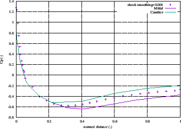 |
Figure 36:
Friction coefficient for laminar viscous flow about a
naca012 airfoil
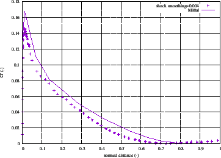 |
A further example is the laminar viscous compressible flow about a naca012
airfoil. Results for this problem were reported by [66]. The entrance
Mach number is 0.85, the Reynolds number is 2000. Of interest is the steady
state solution. In CalculiX this is obtained by performing a transient
CFD-calculation up to steady state. The input deck for this example is called
naca012_visc_mach0.85.inp and can be found amoung the CFD test
examples. Basing the Reynolds number on the unity chord length of the airfoil,
a unit entrance velocity
and a unit entrance density leads to a dynamic viscosity of
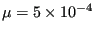
. Taking 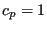
and
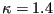
leads to a specific gas constant
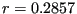
(all in consistent units). Use of the entrance Mach number
determines the entrance static temperature to be 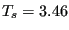
. Finally, the
ideal gas law leads to a entrance static pressure of 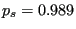
. Taking the
Prandl number to be 1 determines the heat conductivity
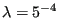
. The surface of the airfoil is assumed to be adiabatic.
The results for the pressure and the friction coefficient at the surface of
the airfoil are shown in Figures
35 and 36, respectively, as a function of the shock
smoothing coefficient. The pressure coefficient is defined by
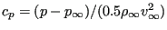
, where p is the local static
pressure, 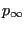
,
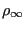
and 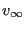
are the static pressure,
density and velocity at the entrance, respectively. Figure 35
shows that the result for a shock smoothing coefficient of 0.004, which is the
smallest value not leading to divergence is in between the results reported by
Cambier and Mittal. The friction coefficient is defined by
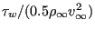
, where 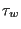
is the local shear
stress. The CalculiX results with a shock smoothing coefficient of 0.004 are
smaller than the ones reported by Mittal. The 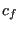
-peak at the front of the
airfoil is also somewhat too small: the literature result is 0.17, the CalculiX peak reaches only
up to 0.15. The shock coefficient is already very small and it is the smallest
feasible value for this mesh anyway, so decreasing the shock coefficient,
which would further increase the peak, is
not an option. A too coarse mesh density at that location may also play a role.